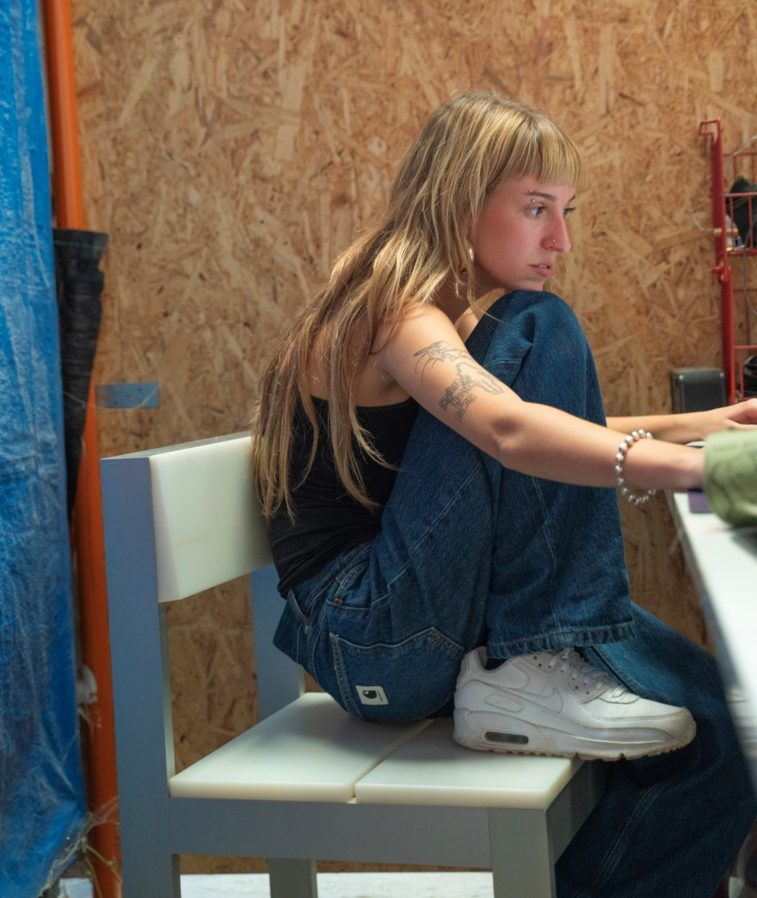
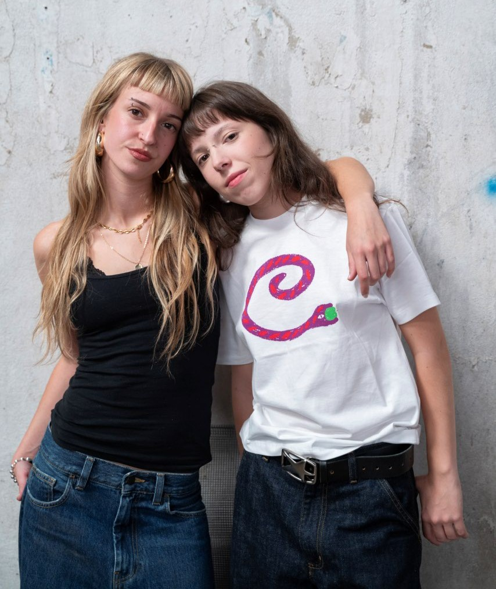

Alicia Ezpeleta es una artista multimedia que trabaja en el ámbito de la escultura y la instalación desde una perspectiva interdisciplinar, combinando procesos de fabricación material con herramientas tecnológicas. Su práctica explora críticamente el papel de la tecnología en la sociedad contemporánea, inspirándose en los imaginarios de la ciencia ficción y la cultura visual de internet. A través de la experimentación con hardware y software, investiga cómo los entornos digitales moldean nuestra percepción y transforman las relaciones humanas, atendiendo tanto a sus mecanismos de control como a las nuevas formas de interacción que posibilitan. Paralelamente, desarrolla una práctica colaborativa a través de La Jeta, colectivo fundado en 2020 junto a Sara Alastuey.

La Jeta
La Jeta es un colectivo artístico fundado por Alicia Ezpeleta y Sara Alastuey, quienes se conocieron durante su primer año de estudios en Bellas Artes en la Universidad Politécnica de Valencia (UPV). Desde su encuentro, han formado una alianza tanto en el ámbito personal como en el artístico. Su profundo interés por los medios digitales y la intersección entre arte y tecnología ha sido el motor que impulsa su colaboración creativa.
En el año 2020 surge La Jeta con el objetivo de fomentar el trabajo colaborativo y facilitar el intercambio de ideas y proyectos entre artistas. Este nombre se ha consolidado como la marca bajo la cual Alicia y Sara presentan su obra conjunta, destacándose siempre por su inclinación hacia la interdisciplinariedad y la sinergia entre distintas formas de expresión artística.
El énfasis en el trabajo colaborativo ha sido una constante en la trayectoria de La Jeta. Sus conexiones con el mundo del techno en Valencia, ha permitido que Alicia y Sara se desarrollen como lightjockeys, colaborando con diversos colectivos de la escena electrónica de la ciudad. De esta actividad, surge un profundo interés por los medios digitales, incentivando así una experimentación que se ha traducido en proyectos escenográficos y propuestas protagonizadas por la tecnología.
Instagram: @lajeta
lajeta.vlc@gmail.com
